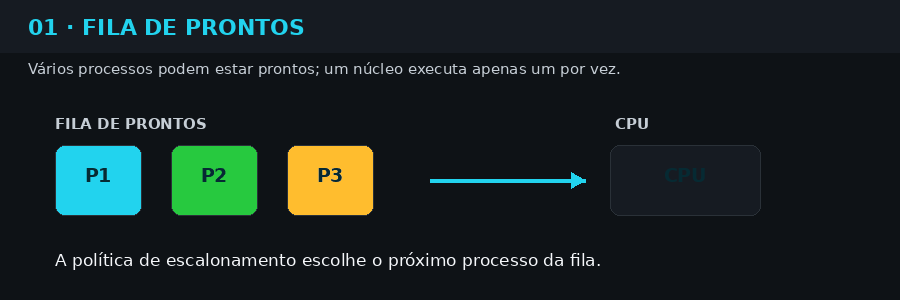
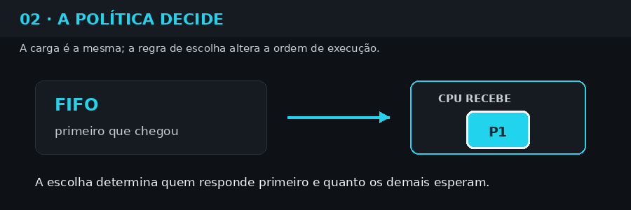
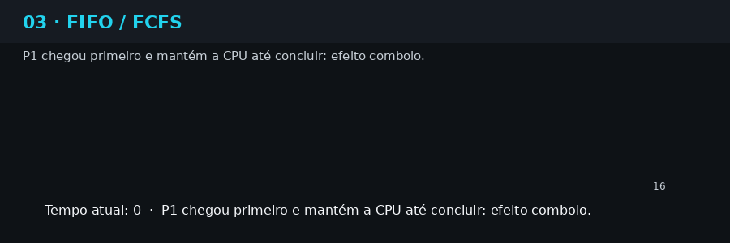
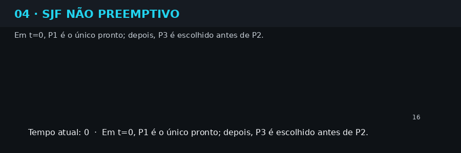
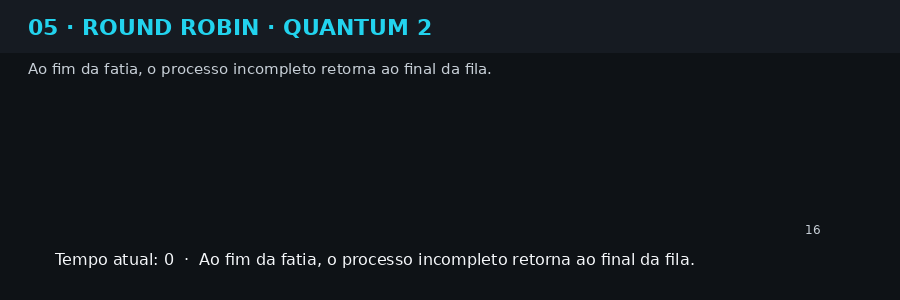
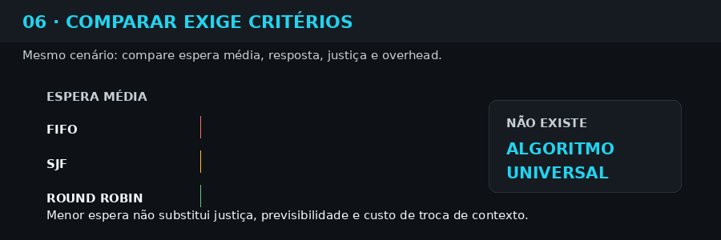

Identificar processos com uso intensivo de CPU ou memória, encerrá-los com segurança e ajustar seu escalonamento.
Sistemas Operacionais · IFSP · Prof. Cristiano Pessoa
Processos e escalonamento
Como programas se tornam trabalho executável — e como o sistema operacional decide quem usa a CPU, em que ordem e por quanto tempo.
01 · POR QUE ESTUDAR PROCESSOS?
O computador executa muitos trabalhos ao mesmo tempo
Uma situação comum
Enquanto um navegador carrega uma página, serviços de rede respondem a conexões, o editor salva arquivos e o sistema atualiza áudio, relógio e interface. Servidores e dispositivos de IoT fazem o mesmo com bancos de dados, APIs, sensores e rotinas de manutenção.
A CPU, a memória e a entrada e saída são recursos finitos. O sistema operacional precisa transformar programas em unidades administráveis, acompanhar o que cada uma consome e organizar a concorrência entre elas.
Pergunta de partida
Como identificar o que está em execução, descobrir quem consome recursos e decidir quem deve usar a CPU primeiro — sem comprometer o sistema?
Programa não é processo
PROGRAMA
- É um arquivo com instruções.
- Permanece armazenado em disco.
- É uma descrição passiva do trabalho.
PROCESSO
- É uma instância em execução.
- Possui PID, memória, registradores e estado.
- Pode estar pronto, executando ou esperando.
Exemplo: o executável do navegador é um programa. Ao iniciá-lo, o sistema cria processos com identidade e recursos próprios; o mesmo programa pode originar várias instâncias.
Conexão com certificações e atuação profissional
Monitorar uso de recursos, compreender limites e analisar como workloads são posicionados e executados no cluster.
Ferramentas como ps, top, nice e renice dependem da compreensão de processo, prioridade, estado e consumo.
As certificações não exigem necessariamente a memorização de FIFO, SJF e Round Robin. Esses modelos fornecem a base para compreender prioridades, compartilhamento, resposta e diagnóstico. No CKA, “scheduling” significa principalmente posicionar Pods nos nós do cluster — uma camada diferente do escalonamento de processos na CPU.
02 · FUNDAMENTOS DO ESCALONAMENTO
Da disputa pela CPU à decisão do sistema operacional
Ao abrir um navegador, reproduzir uma música, executar um comando ou iniciar um serviço, criamos atividades que competem pelos recursos do computador. No sistema operacional, essas atividades são representadas por processos: programas em execução acompanhados de estado, registradores, memória, arquivos abertos e outras informações necessárias para que possam parar e continuar.
Mesmo quando vemos dezenas ou centenas de processos “ao mesmo tempo”, cada núcleo da CPU executa apenas um fluxo de instruções por vez. A sensação de simultaneidade surge porque o sistema alterna rapidamente entre trabalhos e, em máquinas multicore, distribui parte deles entre os núcleos disponíveis.
O componente responsável por escolher o próximo trabalho é o escalonador. Ele aplica uma política; o dispatcher concretiza a decisão, entregando a CPU ao processo selecionado. A troca exige salvar o estado do processo atual e restaurar o estado do próximo — operação chamada troca de contexto.
O problema central: se há mais processos prontos do que CPUs disponíveis, alguém precisa esperar. Escalonar não é apenas “escolher o próximo”; é equilibrar desempenho, justiça, resposta e previsibilidade.
Como uma decisão de escalonamento acontece
01 · CHEGADAO trabalho apareceUm processo é criado ou deixa de esperar por entrada e saída.
02 · PRONTOEntra na filaEle possui condições de executar, mas a CPU pode estar ocupada.
03 · DECISÃOA política escolheFIFO, SJF, Round Robin ou outra regra seleciona o próximo.
04 · EXECUÇÃORecebe a CPUExecuta até terminar, bloquear ou ser interrompido pela política.
O escalonador é acionado em eventos como criação e término de processos, bloqueio para entrada e saída, retorno ao estado pronto e expiração de uma fatia de tempo. Em uma política não preemptiva, o processo normalmente conserva a CPU até terminar seu burst ou bloquear. Em uma política preemptiva, o sistema pode interrompê-lo para atender outro processo ou garantir compartilhamento.
Por que usamos políticas diferentes?
RespostaQuanto tempo o usuário espera até perceber a primeira reação do sistema?
VazãoQuantos trabalhos o sistema consegue concluir em determinado intervalo?
JustiçaOs processos recebem oportunidades razoáveis ou algum pode esperar indefinidamente?
PrevisibilidadeO comportamento é estável o bastante para o objetivo do sistema?
Um computador interativo valoriza resposta rápida; um servidor em lote pode priorizar vazão; um sistema de tempo real precisa respeitar prazos. Por isso, não existe um algoritmo universalmente “melhor”. Existe uma política mais adequada ao objetivo, à carga e às restrições do ambiente.
As três políticas desta aula
FIFO / FCFS
Executa pela ordem de chegada. É simples e previsível, mas um processo longo pode reter a CPU e produzir o efeito comboio.
SJF não preemptivo
Entre os processos prontos, escolhe o menor burst estimado. Pode reduzir a espera média, mas depende de previsão e pode desfavorecer trabalhos longos.
Round Robin
Distribui fatias de CPU em uma fila circular. Favorece interatividade e justiça, porém um quantum pequeno aumenta trocas de contexto.
| Política | Regra de escolha | Preempção | Ponto forte | Limitação principal |
|---|---|---|---|---|
| FIFO / FCFS | Primeiro que chega | Não | Simplicidade e baixo overhead | Efeito comboio |
| SJF | Menor burst disponível | Não, nesta aula | Boa espera média quando a estimativa é correta | Exige estimar o burst; risco de espera prolongada |
| Round Robin | Próximo da fila circular | Sim, ao acabar o quantum | Boa resposta e compartilhamento | Quantum inadequado aumenta overhead ou aproxima FIFO |
Métricas que usaremos: turnaround é conclusão menos chegada; espera é turnaround menos burst; resposta é primeira execução menos chegada. O menor valor médio ajuda a comparar, mas não elimina critérios como justiça e previsibilidade.
▶
Agora o simulador tem um propósito: construir a mesma carga de processos, trocar apenas a política e observar como a ordem de execução altera a fila, as métricas e a experiência percebida.
03 · VEJA ANTES DE EXPERIMENTAR
Seis demonstrações para orientar a observação
As animações abaixo antecipam o que será visto no simulador. Os botões carregam automaticamente os dados, o algoritmo e o quantum corretos: o aluno pode observar primeiro e editar depois.
1 · Vários processos, uma CPU
P1, P2 e P3 estão prontos, mas apenas um deles pode ocupar este núcleo a cada instante.

2 · A política muda a decisão
Os processos são os mesmos. A regra de escolha altera quem entra na CPU e quanto os demais esperam.

3 · FIFO e o efeito comboio
O processo longo chega primeiro e mantém a CPU até terminar; os curtos permanecem atrás dele.

4 · SJF favorece o menor burst
A cada liberação da CPU, o menor trabalho já disponível é escolhido. A espera média tende a cair.

5 · Round Robin divide o tempo
Com quantum 2, cada processo recebe uma fatia e, se não terminar, retorna ao final da fila.

6 · Comparar exige critérios
Menor espera não é o único objetivo: resposta, justiça, previsibilidade e overhead também importam.

Roteiro de leitura: acompanhe a CPU, observe a fila de prontos e compare as métricas. Somente depois altere chegadas, bursts e quantum.
04 · SIMULADOR INTERATIVO
Edite, execute e compare
Escalonador didático
Os tempos são unidades abstratas. Não representam segundos reais nem o escalonador completo do Linux.
PROCESSOS
Carregar cenário:
| Cor | Processo | Chegada | Burst | Ação |
|---|
Chegada: inteiro entre 0 e 30. Burst: inteiro entre 1 e 20. Máximo de oito processos.
POLÍTICA
Quantum do Round Robin
Tempo0
CPU—
Fila pronta no início—
DIAGRAMA DE GANTT · Round Robin
Leitura: pressione Calcular e animar.
MÉTRICAS POR PROCESSO
| Processo | Chegada | Burst | Conclusão | Turnaround | Espera | Resposta |
|---|
As métricas não incluem custo de troca de contexto. Empates seguem chegada e ordem original do cadastro.
COMPARAÇÃO DE MÉDIAS
| Algoritmo | Turnaround médio | Espera média | Resposta média | Trocas/Fatias |
|---|
Menor média não define, sozinha, o melhor algoritmo. Considere justiça, previsibilidade, overhead e objetivo do sistema.
05 · INVESTIGAÇÃO GUIADA
Quatro testes que revelam o comportamento
Teste 1 · efeito comboio
Carregue “Processo longo primeiro”. Compare FIFO e SJF. Explique o que mudou na espera de P2 e P3.
Teste 2 · quantum
No Round Robin, compare quantum 1 e 5. Observe resposta, número de fatias e fragmentação do Gantt.
Teste 3 · CPU ociosa
Carregue “Chegadas espaçadas”. Identifique os períodos em que nenhum processo estava pronto.
Teste 4 · empates
Carregue “Bursts iguais”. Verifique o critério de desempate e registre por que ele precisa ser declarado.
Como interpretar FIFO
O primeiro processo disponível mantém a CPU até terminar. Uma tarefa longa na frente da fila pode produzir o efeito comboio.
Como interpretar SJF
A cada liberação da CPU, o simulador escolhe o menor burst entre os que já chegaram. Como é não preemptivo, um processo em execução não é interrompido pela chegada de outro menor.
Como interpretar Round Robin
O processo executa até terminar ou consumir o quantum. Se ainda tiver trabalho, retorna ao final da fila depois que as novas chegadas daquele instante entram na fila.
06 · VERIFICAÇÃO DA APRENDIZAGEM
Desafio final: processos e escalonamento
0 de 6 concluídasResponda com base nos conceitos e nos experimentos realizados. O feedback explica o raciocínio; a atividade é formativa e não envia notas ao Moodle.
Questão 1 · Programa e processo
Qual alternativa descreve corretamente um processo?
Questão 2 · Fila de prontos
Um processo está no estado pronto. O que isso significa?
Questão 3 · Efeito comboio
P1 possui burst 10 e chega antes de P2 e P3, cujos bursts são menores. Qual política tende a produzir o efeito comboio?
Questão 4 · Limitação do SJF
Qual é a principal dificuldade prática do SJF?
Questão 5 · Quantum no Round Robin
O que tende a acontecer quando o quantum é reduzido?
Questão 6 · Interpretação de cenário
P1 e P2 chegam no tempo 0. P1 tem burst 6 e P2 tem burst 2. No SJF não preemptivo, qual é a ordem?
07 · REFERÊNCIAS
Base conceitual da aula
- TANENBAUM, Andrew S.; BOS, Herbert. Modern Operating Systems. 5. ed. Pearson, 2023. Processos, threads e escalonamento.
- SILBERSCHATZ, Abraham; GALVIN, Peter B.; GAGNE, Greg. Operating System Concepts. 10. ed. Wiley, 2018. Capítulo 5: CPU Scheduling.
- STALLINGS, William. Operating Systems: Internals and Design Principles. 9. ed. Pearson, 2018. Princípios, critérios e políticas de escalonamento.
- RED HAT. Objetivos do exame RHCSA EX200. Operação de sistemas em execução e ajuste do escalonamento de processos.
- LINUX FOUNDATION. Certified Kubernetes Administrator — Domains & Competencies. Workloads, scheduling, monitoramento e troubleshooting.
O simulador apresenta modelos didáticos simplificados. Escalonadores reais, como os empregados por Linux e Windows, combinam prioridades, classes, afinidade, múltiplos núcleos e outros mecanismos não representados aqui.